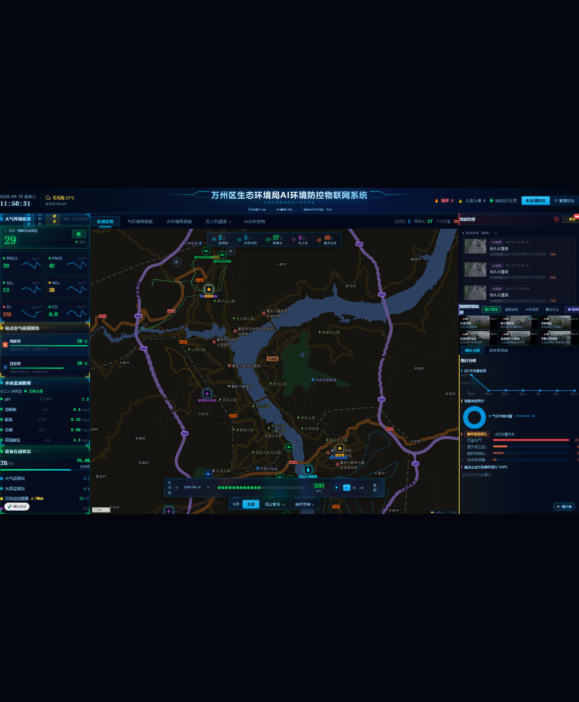
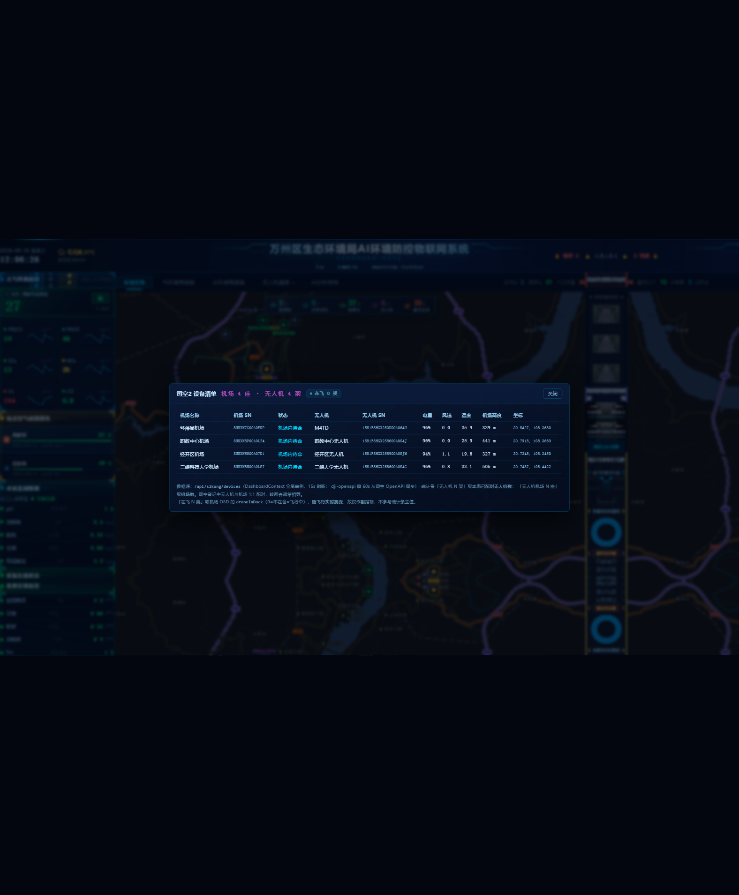

| 验收项 | 预期 | 实测 | 结果 |
|---|---|---|---|
| 统计条「无人机」 | 4 架 | 4 架 无人机（与 /api/sikong/devices 的 droneCount 一致） | 通过 |
| 其余 KPI 未被影响 | 保持原值 | 2 座 监测站 / 5 个 水质点位 / 27 路 摄像头 / 10 家 重点企业 | 通过 |
| 气环境覆盖卡语义 | 「无人机机场 4 座」用 dockCount | 拆为「无人机机场 4 座」+「无人机 4 架」两行 | 通过 |
| 断链降级（关键） | 显示「—」，不显示 0 | 4 架 → 注入断链 → — 架（琥珀色 + 警示点），弹窗顶部出现降级告警条，保留最后一次台账 4 行 | 通过 |
| P2 点击下钻 | 弹出司空设备清单 | 弹窗「司空2 设备清单 机场 4 座 · 无人机 4 架」+ 4 行明细（机场/SN/状态/无人机/机型/SN/电量/风速/温度/高度/坐标） | 通过 |
| MapView 数据源统一 | 改由 Context 供数、地图不回归 | 地图 4 机场图标 + 图例「司空机场·实时遥测(4)」正常；重复轮询已消除 | 通过 |
| 副指标「在飞 N 架」角标 （追加需求） | 弹窗头部显示在飞数（数据取 osd.droneInDock） | 角标 [data-sikong-flying] = 「在飞 0 架」（灰蓝静默，rgb(90,138,170)）；title=「在飞 0 架 · 机场内待命 4 架」；4 行状态全部「机场内待命」，与 dockedCount=4 一致；KPI 悬浮提示同步带「/ 在飞 0 架」 | 通过 |
| 发布门禁 | tsc --noEmit + build | TSC_EXIT=0 · built in 7.56s · EXIT=0 | 通过 |
| 部署核验 | HTTP 200 + md5 磁盘==HTTP | 5/5 资源通过；后端 sikong.js md5 本地==远端 50bf0158… | 通过 |


| 文件 | 类型 | 改动要点 |
|---|---|---|
server/sikong.js | 改 | fetchMergedDevices() 返回体新增 upstreamOk / degraded / dockCount / droneCount / droneUnpaired / flyingCount / dockedCount / osdMissingCount（口径唯一出处；在飞判定与前端 sikongStatus.ts 同规则） |
src/app/lib/api-types.ts | 改 | 新增 ⑥ SikongDrone / SikongDevice / SikongDevicesResp + SIKONG_DEVICES_REQUIRED（契约单一出处，含该结构陷阱的注释） |
src/app/context/DashboardContext.tsx | 改 | 新增司空设备全局单例轮询（15s）：sikongDevices / dockCount / droneCount / droneUnpaired / sikongAvailable；5 分钟宽限期沿用上次成功值；upstreamOk===false 视同失败 |
src/app/lib/sikongStatus.ts | 新增 | 「在飞/待命/遥测未推送」判定的单一出处（droneDockState() + DOCK_STATE_LABEL）：原先 MapView 与弹窗各写 droneInDock === 1/0 严格比较，类型一变就会「头部角标说在飞、列表说待命」；现统一 + Number() 容错 |
src/app/components/MapView.tsx | 改 | 删除本地 sikongDocks state 与 /api/sikong/devices 轮询；改用 Context 数据；flying 判定与信息窗状态文案改用 sikongStatus（本地 SikongDock 接口收敛为 api-types 别名） |
src/app/components/CenterPanel.tsx | 改 | KPI 取 droneCount（不可达显示 —）；覆盖卡拆出 dockCount；StatsCell 支持 onClick/title/warn（可点击 + 降级琥珀色 + a11y role/tabindex）；挂载下钻弹窗 |
src/app/components/SikongDeviceModal.tsx | 新增 | P2 司空设备清单弹窗（机场/无人机/机型/SN/状态/电量/风速/温度/高度/坐标 + 降级告警条 + 脚注说明口径）；头部副指标角标 FlyingBadge（在飞 >0 绿色+呼吸点 / =0 灰蓝静默 / 遥测缺失另出琥珀色提示） |
src/app/components/admin/MapPointManage.tsx | 改 | 页内新增提示条 + 顶部注释：uav 点位只影响地图图标、不再参与 KPI，避免后人误以为改这里能改统计条数字 |
司空2 OpenAPI ──(60s)──▶ dji-openapi:17810 ──▶ jsc-backend /api/sikong/devices
│ ← 口径唯一出处：dockCount / droneCount
▼
DashboardContext（全局单例 15s 轮询）
├──▶ CenterPanel 统计条「无人机 N 架」(droneCount)
├──▶ CenterPanel 覆盖卡「无人机机场 N 座」(dockCount)
├──▶ CenterPanel 下钻弹窗「司空2 设备清单」
└──▶ MapView 地图机场标注 + 实时遥测
断链：15s 轮询失败 ─(≤5min 沿用上次成功值，不闪变)─▶ 超宽限 → sikongAvailable=false → KPI 显示「—」
fetchMergedDevices() 原本对上游失败用 jget(...).catch(() => null) 静默吞掉，于是 dji-openapi 挂掉时会返回 {ok:true, items:[], droneCount:0} —— 前端会把它当成"司空确实没有无人机"，显示 0 架，正是本次要消除的误读。
修法：后端显式上报 upstreamOk / degraded；前端把 upstreamOk === false 视同请求失败，走宽限期 → 显示「—」。并通过前端注入（拦截 fetch + 偏移 Date.now 使宽限期过期）完成了真实验证，未对生产做任何破坏性操作。
| 批次 | 评估工作量 | 实际 | 偏差说明 |
|---|---|---|---|
| P0 后端口径字段 | 0.2d | 完成 | — |
| P0 前端取值替换 + 拆覆盖卡 | 0.3d | 完成 | — |
| P1 降级与离线态 | 0.2d | 完成，多一处后端修复 | 评估时漏判了「上游失败被 .catch 吞掉」这一层 → 追加了 upstreamOk 契约（本报告第三节） |
| P1 MapView 数据源统一 | 0.3d | 完成 | 顺带消除了一处重复轮询，净减请求 |
| P2 KPI 点击下钻 | 0.5d | 完成 | — |
| 验收 / 部署 / 核验 | — | 完成 | 含 3 张真实页面截图留档 |
/opt/jsc/backend/backups/sikong.js.bak_20260916_114208、/opt/jsc/frontend/backups/index.html.bak_20260916_114208（原 sikong.js md5 d42456a4c9dbc67d202b30fac2c60330）。sikong.js → systemctl restart jsc-backend；前端还原 index.html（旧 assets 因 contenthash 仍在，无需回滚 assets）。mapPoints.uav 旧口径 → 又变 0）。
| # | 事项 | 建议 |
|---|---|---|
| 1 | 「当前在飞」副指标（口径 C） | 已补齐 弹窗头部角标已上线（后端 flyingCount/dockedCount/osdMissingCount + 前端 sikongStatus.ts 单一出处）。仍不参与统计条主值，因为它会随飞行 0↔4 跳变，只宜作副指标 |
| 2 | 「无人机视频」分组与 KPI 口径无关 | 视频轮播的「无人机视频」分组仍由 videoStreams.group 决定，与本次 KPI 无耦合，无需改动（此处仅作说明，避免以后混淆） |
| 3 | 多数 MapPointManage 的 uav 点位仍为 0 | 提示条已说明「不影响 KPI」；如无地图补点需求，可后续清理该点类型（非必须） |
| 4 | 6 个文件未提交 git | 建议与本次交付一并提交（类型门禁相关改动需原子提交） |
http://111.10.220.226:81/jsc/（外网）· SSH 隧道 -L 18080:127.0.0.1:80 验收（⚠️ 本机 :81/jsc/ 恒 404，:81 是 skymonitor vhost）scripts/ui-probe.mjs（Edge headless + CDP）· 证据：tmp/ui_kpi*.json / tmp/ui_flying_badge.json / tmp/ui_*.png / tmp/_vd4.txtbadgeText="在飞 0 架" · data-sikong-flying="0" · badgeTitle="在飞 0 架 · 机场内待命 4 架" · 行状态 4/4「机场内待命」与 dockedCount=4 一致